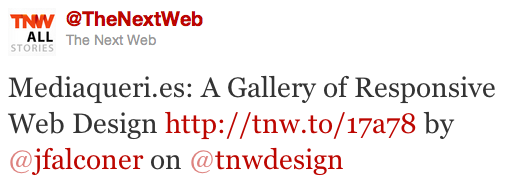

Er du responsiv?
Hans-Christian Fjeldberg
Eivind Uggedal — @uggedal
Bekk Consulting
Grensesnittet — 15. november 2011
Hans-Christian Fjeldberg
Eivind Uggedal — @uggedal
Bekk Consulting
Grensesnittet — 15. november 2011


The primary design principle underlying the Web’s usefulness and growth is universality. […] And it should be accessible from any kind of hardware that can connect to the Internet: stationary or mobile, small screen or large.


3 kolonner, 300px med 50px margin
<!DOCTYPE html>
<title>Fast eller flytende grid</title>
<div id="page">
<article>
Hovedinnhold
<figure>
<img src="city.jpg" alt="Vancouver">
<figcaption>
<a href="http://flic.kr/p/7LNQPf">Head on Vancouver</a>
</figcaption>
</figure>
</article>
<aside>Sekundært innhold</aside>
</div>
img {
max-width: 100%;
}
<video controls autoplay> <source src="bunny.webm" type='video/webm; codecs="vp8, vorbis"'> </video>
video {
max-width: 100%;
}

<link rel="stylesheet" media="screen" href="/screen.css"> <link rel="stylesheet" media="print" href="/print.css">
@media screen {
body {
background: #000;
color: #fff;
}
}
@media print {
body {
background: #fff;
color: #000;
}
}
<link rel="stylesheet" media="screen and (max-width: 35em)"
href="/narrow.css">
@media screen and (max-width: 35em) {
#page > article,
#page > aside {
float: none;
width: auto;
}
#page > article {
margin-right: 0;
}
}
De fleste av disse kan ha min- og max- prefiks.
widthdevice-widthheightdevice-heightorientationaspect-ratiodevice-aspect-ratiocolorcolor-indexmonochromeresolutionscangrid<meta name="viewport" content="width=device-width">

#page {
margin: 0 auto;
padding: 0 1em;
max-width: 50em;
}
img {
max-width: 100%;
}
@media screen and (min-width: 35em) {
#page > article {
float: left;
margin-right: 5%;
width: 70%;
}
#page > aside {
float: right;
width: 25%;
}
}
@media screen and (min-width: 60em) {
body {
font-size: 125%;
}
}
| Nettleser | Media queries |
max-width
|
|---|---|---|
| Firefox | 3.5 | ✓ |
| Chrome | 4.0 | ✓ |
| Safari | 3.1 | ✓ |
| Opera | 9.5 | ✓ |
| IE | 9 | 7 |
| iOS | 3.2 | ✓ |
| Android | 2.1 | ✓ |
| WP7 | Mango (IE9) | ✓ |
| Opera Mini | 5.0 | ✓ |
Media queries polyfill: github.com/scottjehl/Respond
#page {
background: transparent url(narrow_bg.png) 50% 0 repeat-y;
}
@media screen and (min-width: 50em) {
#page {
background-image: url(wide_bg.png);
}
}
<noscript data-widths="400,600,800" data-base-src="responsive-.png"> <img src="river-400.png"> </noscript>
$(function(){
$("noscript").each(function() {
var ns = $(this),
best_fit = 0,
content_width = ns.parent().width(),
img_widths = $.map(ns.data("widths").split(","),
function(width) { return parseInt(width) });
$.each(img_widths, function(i, img_width) {
best_fit = i;
return img_width < content_width;
});
var src = ns.data("base-src").replace(/(.+)(\.\w{3})/,
"$1" + img_widths[best_fit] + "$2")
ns.after($("<img>").attr("src", src));
});
});
